Using the command line
Disclaimer
Mostly about bash
Windows cmd.exe does some of this (or powershell)
BUT you can use git bash on windows
Command processor
Text (commands) -> Executing programs [ -> Text output ]
$ ls
sushi-cat-1.jpg sushi-cat-2.jpg sushi-cat-3.jpg ...
$ rm angsty-poetry.txt
$ curl http://www.7digital.com
<html lang="en-GB" ...
Text!
- Text is awesome
- You can input it with all ~100 buttons on the keyboard!
- You can save it for later
- You can READ it after it has been saved
- Lots of tools for dealing with it
- e.g. diffing, your fave text editor (shoutout to vim <3)
- You can generate it easily with a program
- Powerful UI for running programs
- e.g. an option per letter rather than 26 radio buttons
Some Common unixy programs
Little programs each good at one thing (usually)
- echo
- find
- mv
- rm
- cp
- curl
- grep
- less
- head
- tail
Help!
CONVENTION: --help (or -h)
$ ls --help
Usage: ls [OPTION]... [FILE]...
List information about the FILEs (the current directory by default).
Sort entries alphabetically if none of -cftuvSUX nor --sort is specified.
Mandatory arguments to long options are mandatory for short options too.
-a, --all do not ignore entries starting with .
...
More in depth help: man <command>
$ man ls
More conventions
- Short option / long option
(from ls's help)
-a, --all do not ignore entries starting with .
$ ls -a
...
$ ls --all
...
- Long options are more readable
- Short options are dense, but combinable
$ ls -lahg
- Similar meanings, e.g. -n for "number of" something
$ tail -n 5 index.html ... $ head -n 5 index .html - -h for "human readable"
$ ls -l total 88K drwxr-xr-x 4 dave users 4096 Sep 29 16:16 css $ ls -lh total 88K drwxr-xr-x 4 dave users 4.0K Sep 29 16:16 css $ du -h ...
- Wait, what?
- Colliding abbreviation (-h)
- (in these cases --help still works though!)
- Other oddballs, e.g. find
$ find . -iname "*.json" - Often favours power (and experience learning curve!)
$ find . -name 'foo.cs' '!' -path '.git' - Program predates conventions (or maintainer is anti-social?)
On windows (cmd.exe)
.JPG)
/? instead of -h or --help
Switches are generally in the style /X rather than -x
Powershell

... but it's what you're used to
Bash itself
Good at
Helping you write commands
Executing programs
Writing commands
Home directory
$ cd ~
Basic wildcards
$ mv *.jpg pictures/
Brace expansion
$ cp production.db{,.bak}
$ ls
production.db production.db.bak
$ echo {a,b}{c,d}
ac ad bc bd
$ echo {1..10}
1 2 3 4 5 6 7 8 9 10
$ cat server-errors-2014-09-2{5..9}.log
...
Looping
Syntax is a bit nasty
$ for i in {1..4}; do touch new-file-$i.txt; done;
$ touch new-file-1.txt
$ touch new-file-2.txt
$ ...
Brace expansion can often achieve similar results depending on the command you're running, e.g.
$ touch new-file-{1..4}.txt
$ touch new-file-1.txt new-file-2.txt ...
Using a scripting language can be quicker for more complex stuff
Keyboard shortcuts
- A few readline shortcuts:
- CTRL+W: Delete last word
- ALT+B: Jump cursor back a word
- CTRL+R: Search through command history
Executing programs
Streams
Simple command
e.g.
$ ls -lah
Command substitution
$ whoami
a-stupidly-long-username-argh-what-a-pain-to-type
$ sudo chown $(whoami) someone-elses-file.txt
This also works:
$ sudo chown `whoami` someone-elses-file.txt
Those are backticks, $(..) is prefered.
Pipes
Pretty Code
function linkify( selector ) {
if( supports3DTransforms ) {
var nodes = document.querySelectorAll( selector );
for( var i = 0, len = nodes.length; i < len; i++ ) {
var node = nodes[i];
if( !node.className ) {
node.className += ' roll';
}
}
}
}
Courtesy of highlight.js.
Spectacular image!